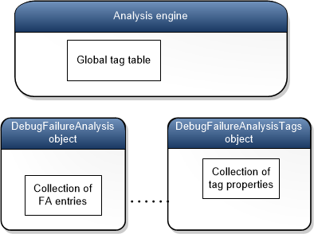

You can extend the capabilities of the !analyze debugger command by writing an analysis extension plugin. By providing an analysis extension plugin, you can participate in the analysis of a bug check or an exception in a way that is specific to your own component or application.
When you write an analysis extension plugin, you also write a metadata file that describes the situations for which you want your plugin to be called. When !analyze runs, it locates, loads, and runs the appropriate analysis extension plugins.
To write an analysis extension plugin and make it available to !analyze, follow these steps.
- Create a DLL that exports an _EFN_Analyze function.
- Create a metadata file that has the same name as your DLL and an extension of .alz. For example, if your DLL is named MyAnalyzer.dll, your metadata file must be named MyAnalyzer.alz. For information about how to create a metadata file, see Metadata Files for Analysis Extensions. Place the metadata file in the same directory as your DLL.
- In the debugger, use the .extpath command to add your directory to the extension file path. For example, if your DLL and metadata file are in the folder named c:\MyAnalyzer, enter the command .extpath+ c:\MyAnalyzer.
When the !analyze command runs in the debugger, the analysis engine looks in the extension file path for metadata files that have the .alz extension. The analysis engine reads the metadata files to determine which analysis extension plugins should be loaded. For example, suppose the analysis engine is running in response to Bug Check 0xA IRQL_NOT_LESS_OR_EQUAL, and it reads a metadata file named MyAnalyzer.alz that contains the following entries.
PluginId MyPlugin
DebuggeeClass Kernel
BugCheckCode 0xA
BugCheckCode 0xE2
The entry BugCheckCode 0x0A specifies that this plugin wants to participate in the analysis of Bug Check 0xA, so the analysis engine loads MyAnalyzer.dll (which must be in the same directory as MyAnalyzer.alz) and calls its _EFN_Analyze function.
Skeleton Example
Here is a skeleton example that you can use as a starting point.
-
Build a DLL named MyAnalyzer.dll that exports the _EFN_Analyze function shown here.
C++ #include <windows.h> #define KDEXT_64BIT #include <wdbgexts.h> #include <dbgeng.h> #include <extsfns.h> extern "C" __declspec(dllexport) HRESULT _EFN_Analyze(_In_ PDEBUG_CLIENT4 Client, _In_ FA_EXTENSION_PLUGIN_PHASE CallPhase, _In_ PDEBUG_FAILURE_ANALYSIS2 pAnalysis) { HRESULT hr = E_FAIL; PDEBUG_CONTROL pControl = NULL; hr = Client->QueryInterface(__uuidof(IDebugControl), (void**)&pControl); if(S_OK == hr && NULL != pControl) { IDebugFAEntryTags* pTags = NULL; pAnalysis->GetDebugFATagControl(&pTags); if(NULL != pTags) { if(FA_PLUGIN_INITILIZATION == CallPhase) { pControl->Output(DEBUG_OUTPUT_NORMAL, "My analyzer: initialization\n"); } else if(FA_PLUGIN_STACK_ANALYSIS == CallPhase) { pControl->Output(DEBUG_OUTPUT_NORMAL, "My analyzer: stack analysis\n"); } else if(FA_PLUGIN_PRE_BUCKETING == CallPhase) { pControl->Output(DEBUG_OUTPUT_NORMAL, "My analyzer: prebucketing\n"); } else if(FA_PLUGIN_POST_BUCKETING == CallPhase) { pControl->Output(DEBUG_OUTPUT_NORMAL, "My analyzer: post bucketing\n"); FA_ENTRY_TYPE entryType = pTags->GetType(DEBUG_FLR_BUGCHECK_CODE); pControl->Output(DEBUG_OUTPUT_NORMAL, "The data type for the DEBUG_FLR_BUGCHECK_CODE tag is 0x%x.\n\n", entryType); } } pControl->Release(); } return hr; } -
Create a metadata file named MyAnalyzer.alz that has the following entries.
cmd PluginId MyPlugin DebuggeeClass Kernel BugCheckCode 0xE2
Note The last line of the metadata file must end with a newline character. -
Establish a kernel-mode debugging session between a host and target computer.
-
On the host computer, put MyAnalyzer.dll and MyAnalyzer.alz in the folder c:\MyAnalyzer.
-
On the host computer, in the debugger, enter these commands.
.extpath+ c:\MyAnalyzer
.crash
-
The .crash command generates Bug Check 0xE2 MANUALLY_INITIATED_CRASH on the target computer, which causes a break in to the debugger on the host computer. The bug check analysis engine (running in the debugger on the host computer) reads MyAnalyzer.alz and sees that MyAnalyzer.dll is able to participate in analyzing bug check 0xE2. So the analysis engine loads MyAnalyzer.dll and calls its _EFN_Analyze function.
Verify that you see output similar to the following in the debugger.
* Bugcheck Analysis * * * ******************************************************************************* Use !analyze -v to get detailed debugging information. BugCheck E2, {0, 0, 0, 0} My analyzer: initialization My analyzer: stack analysis My analyzer: prebucketing My analyzer: post bucketing The data type for the DEBUG_FLR_BUGCHECK_CODE tag is 0x1.
The preceding debugger output shows that the analysis engine called the _EFN_Analyze function four times: once for each phase of the analysis. The analysis engine passes the _EFN_Analyze function two interface pointers. Client is an IDebugClient4 interface, and pAnalysis is an IDebugFailureAnalysis2 interface. The code in the preceding skeleton example shows how to obtain two more interface pointers. Client->QueryInterface gets an IDebugControl interface, and pAnalysis->GetDebugFATagControl gets an IDebugFAEntryTags interface.
Failure Analysis Entries, Tags, and Data Types
The analysis engine creates a DebugFailureAnalysis object to organize the data related to a particular code failure. A DebugFailureAnalysis object has a collection of failure analysis entries (FA entries), each of which is represented by an FA_ENTRY structure. An analysis extension plugin uses the IDebugFailureAnalysis2 interface to get access to this collection of FA entries. Each FA entry has a tag that identifies the kind of information that the entry contains. For example, an FA entry might have the tag DEBUG_FLR_BUGCHECK_CODE, which tells us that the entry contains a bug check code. Tags are values in the DEBUG_FLR_PARAM_TYPE enumeration (defined in extsfns.h), which is also called the FA_TAG enumeration.
| C++ |
|---|
typedef enum _DEBUG_FLR_PARAM_TYPE {
...
DEBUG_FLR_BUGCHECK_CODE,
...
DEBUG_FLR_BUILD_VERSION_STRING,
...
} DEBUG_FLR_PARAM_TYPE;
typedef DEBUG_FLR_PARAM_TYPE FA_TAG;
|
Most FA entries have an associated data block. The DataSize member of the FA_ENTRY structure holds the size of the data block. Some FA entries do not have an associated data block; all the information is conveyed by the tag. In those cases, the DataSize member has a value of 0.
| C++ |
|---|
typedef struct _FA_ENTRY
{
FA_TAG Tag;
USHORT FullSize;
USHORT DataSize;
} FA_ENTRY, *PFA_ENTRY;
|
Each tag has a set of properties: for example, name, description, and data type. A DebugFailureAnalysis object is associated with a DebugFailureAnalysisTags object, which contains a collection of tag properties. The following diagram illustrates this association.

A DebugFailureAnalysis object has a collection of FA entries that belong to a particular analysis session. The associated DebugFailureAnalysisTags object has a collection of tag properties that includes only the tags used by that same analysis session. As the preceding diagram shows, the analysis engine has a global tag table that holds limited information about a large set of tags that are generally available for use by analysis sessions.
Typically most of the tags used by an analysis session are standard tags; that is, the tags are values in the FA_TAG enumeration. However, an analysis extension plug-in can create custom tags. An analysis extension plug-in can add an FA entry to a DebugFailureAnalysis object and specify a custom tag for the entry. In that case, properties for the custom tag are added to the collection of tag properties in the associated DebugFailureAnalysisTags object.
You can access a DebugFailureAnalysisTags through an IDebugFAEntry tags interface. To get a pointer to an IDebugFAEntry interface, call the GetDebugFATagControl method of the IDebugFailureAnalysis2 interface.
Each tag has a data type property that you can inspect to determine the data type of the data in a failure analysis entry. A data type is represented by a value in the FA_ENTRY_TYPE enumeration.
The following line of code gets the data type of the DEBUG_FLR_BUILD_VERSION_STRING tag. In this case, the data type is DEBUG_FA_ENTRY_ANSI_STRING. In the code, pAnalysis is a pointer to an IDebugFailureAnalysis2 interface.
| C++ |
|---|
IDebugFAEntryTags* pTags = pAnalysis->GetDebugFATagControl(&pTags);
if(NULL != pTags)
{
FA_ENTRY_TYPE entryType = pTags->GetType(DEBUG_FLR_BUILD_VERSION_STRING);
}
|
If a failure analysis entry has no data block, the data type of the associated tag is DEBUG_FA_ENTRY_NO_TYPE.
Recall that a DebugFailureAnalysis object has a collection of FA entries. To inspect all the FA entries in the collection, use the NextEntry method. The following example shows how to iterate through the entire collection of FA entries. Assume that pAnalysis is a pointer to an IDebugFailureAnalysis2 interface. Notice that we get the first entry by passing NULL to NextEntry.
| C++ |
|---|
PFA_ENTRY entry = pAnalysis->NextEntry(NULL);
while(NULL != entry)
{
// Do something with the entry
entry = pAnalysis->NextEntry(entry);
}
|
A tag can have a name and a description. In the following code, pAnalysis is a pointer to an IDebugFailureAnalysis interface, pControl is a pointer to an IDebugControl interface, and pTags is a pointer to an IDebugFAEntryTags interface. The code shows how to use the GetProperties method to get the name and description of the tag associated with an FA entry.
| C++ |
|---|
#define MAX_NAME_LENGTH 64
#define MAX_DESCRIPTION_LENGTH 512
CHAR name[MAX_NAME_LENGTH] = {0};
ULONG nameSize = MAX_NAME_LENGTH;
CHAR desc[MAX_DESCRIPTION_LENGTH] = {0};
ULONG descSize = MAX_DESCRIPTION_LENGTH;
PFA_ENTRY pEntry = pAnalysis->NextEntry(NULL);
pTags->GetProperties(pEntry->Tag, name, &nameSize, desc, &descSize, NULL);
pControl->Output(DEBUG_OUTPUT_NORMAL, "The name is %s\n", name);
pControl->Output(DEBUG_OUTPUT_NORMAL, "The description is %s\n", desc);
|
Related topics
- Writing Custom Analysis Debugger Extensions
- _EFN_Analyze
- Metadata Files for Analysis Extension Plug-ins
- IDebugFailureAnalysis2
- IDebugFAEntryTags